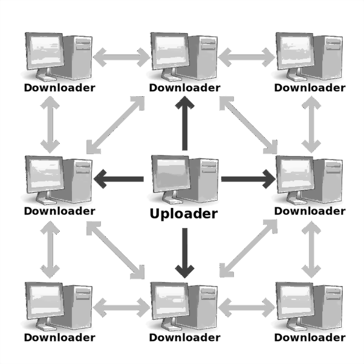

What is Torrent? What is Seeders, Leechers and Trackers in Torrent? Explained
Torrent
BitTorrent / uTorrent is a communication protocol for peer-to-peer file sharing which is used to distribute large amounts of data and electronic files over the Internet, such as digital video files containing TV shows or video clips or digital audio files containing songs.
In peer-to-peer network topology, there can be either two communicating parties without any external server or a couple of computers connected via a USB to transfer files.
This way there is no central server in Torrent for distributing files. BitTorrent protocol allows users to join a “swarm” (a group of people downloading and uploading the same file) of hosts to download and upload from each other at the same time.
Seeders
When a user wants to upload a file, he/she first creates a small torrent descriptor file that can be distributed by conventional means (the web, email, etc.). They then make the file itself available through a BitTorrent node acting as a seed. A number of peers who have already downloaded the files, and are currently uploading them are called Seeders. A Seeder is someone from whom you can download a piece of the file. Seeders share the file with peers but do not download any parts of the file from others.
Leechers
A leecher is any peer that does not have the entire file and is downloading the file. If the file is not downloaded successfully, it remains as a leech. Once the file has been downloaded, a leecher does not share it back to the P2P network (Or he/she do not seed). Hence, the overall availability of file decreases.

The middle PC acts as Seed, Rest of them are peers
Peer
A Peer is someone who is downloading and uploading the file in the swarm. Files are downloaded in pieces. When a user downloads some pieces, he then automatically starts uploading it. A file will be downloaded faster if more people are involved in the swarm. A peer becomes a seed when he has completed 100% of the file and wishes to continue uploading.
Tracker
Tracker is a server that keeps track of seeds and peers. Clients report information to the tracker periodically and in exchange, receive information about other clients to which they can connect. The tracker is not directly involved in the data transfer and does not have a copy of the file.